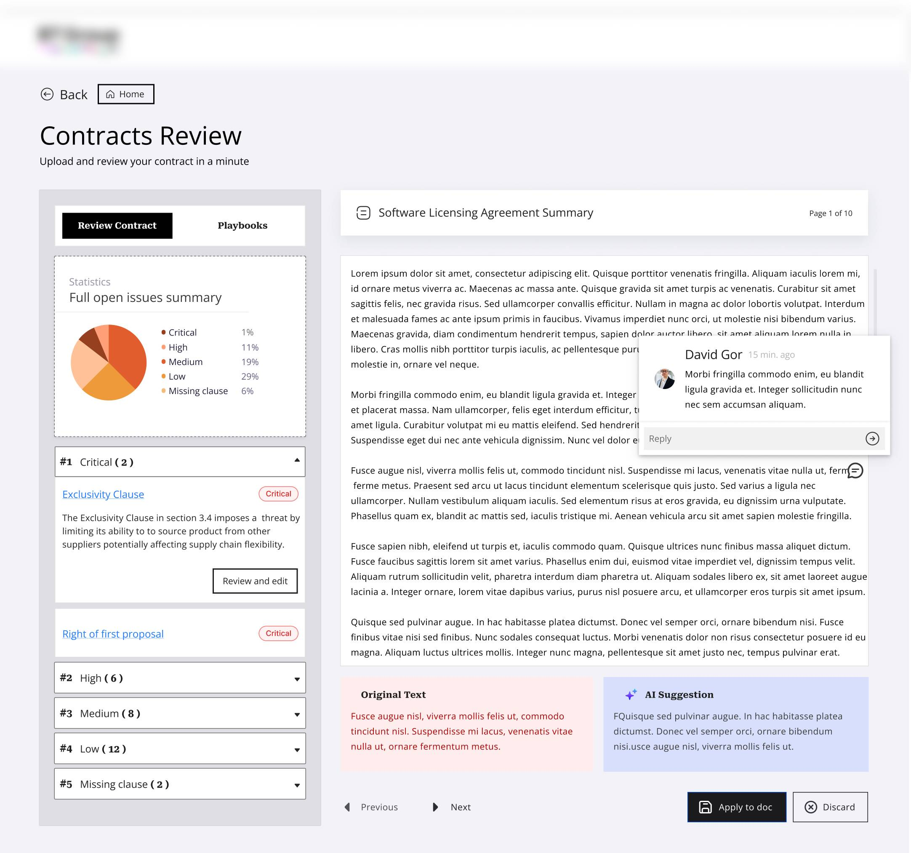
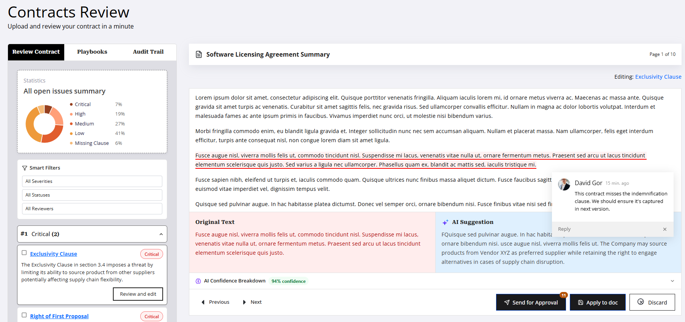
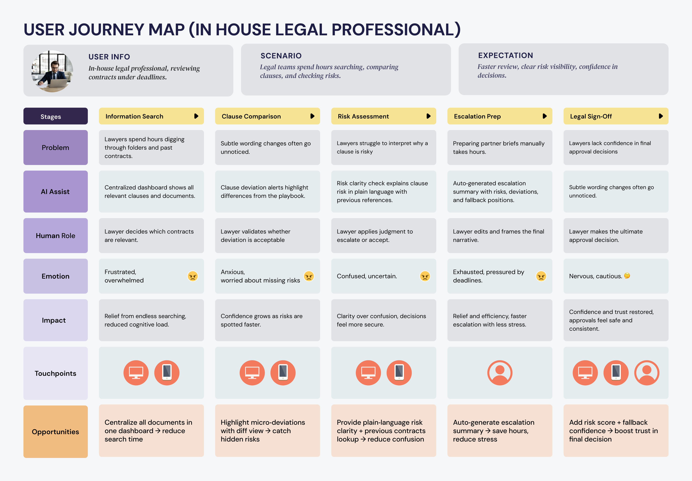
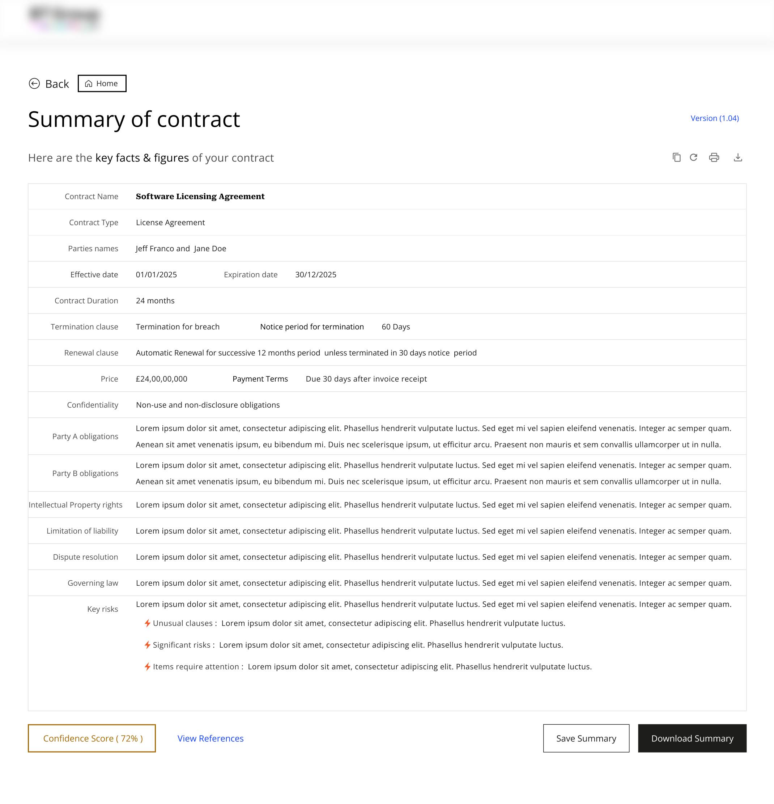
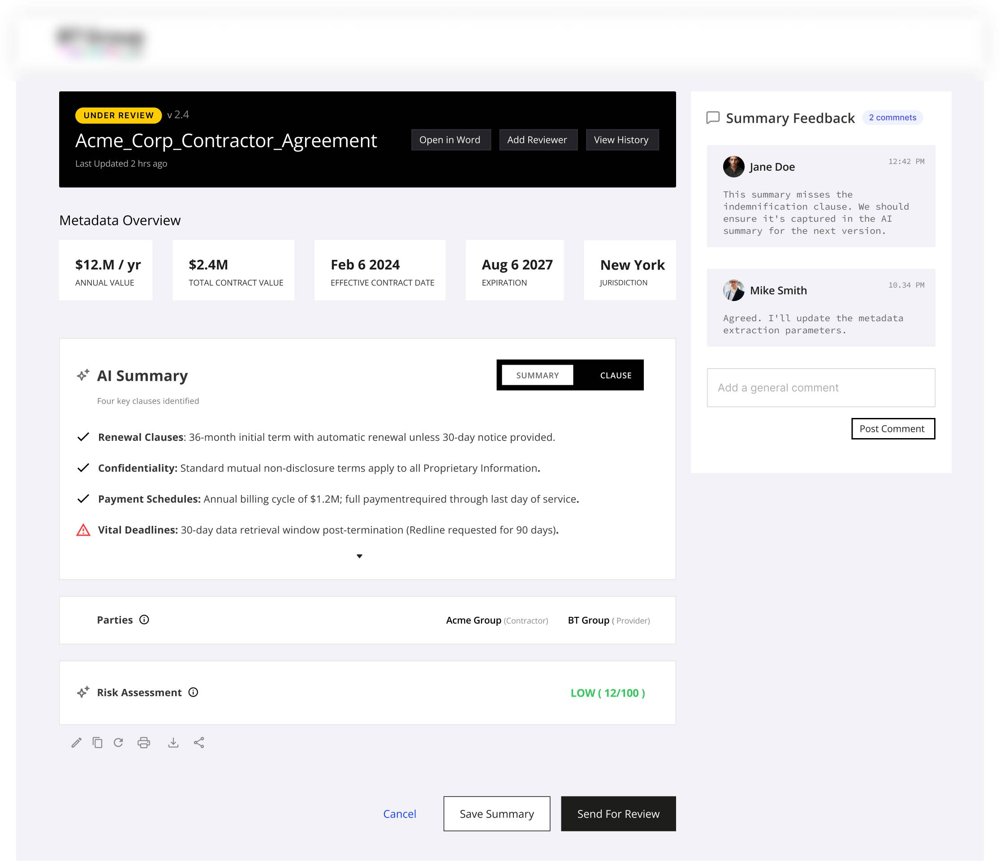
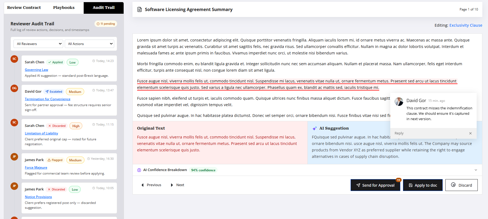
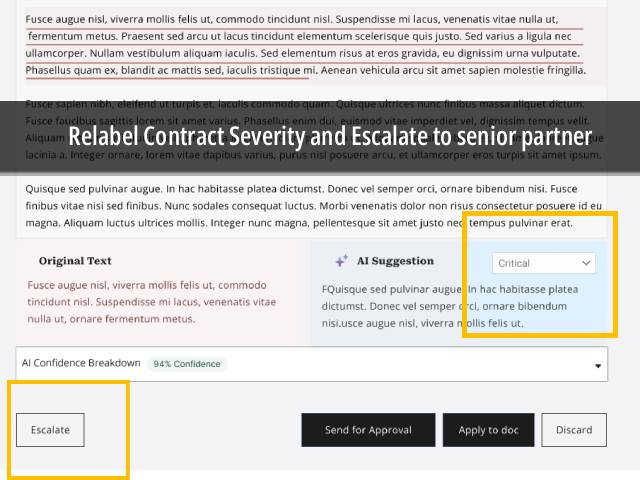
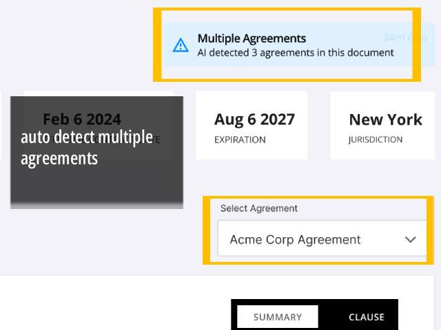
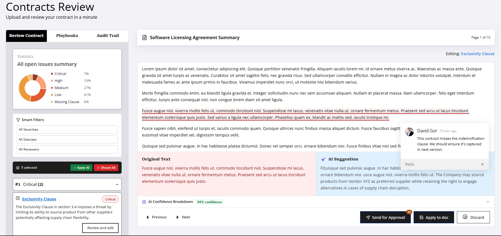

Observed
People could not verify AI recommendations.
Changed
Added source references and related agreements.
Design outcome
Clearer evidence during review.
Contract review isn't just reading a document. A lawyer may need to compare a vendor's clause with the company's standard, check an earlier agreement, and understand what changed before deciding whether to accept, negotiate, or escalate.
What changed
We started by looking at faster drafting. Research showed that the harder problem was knowing what changed, why it mattered, and having enough evidence to review it.



My role & responsibilities
Lead Designer · Discovery, Interaction Design, System Architecture & User Testing
Cross-functional team
1 Product Manager · 4 AI/Full-stack Engineers · 2 Legal SMEs
Core challenge
Establishing trust and clarity in AI-assisted contract review
Design principle
AI provides synthesis and flags. Humans make decisions.
The Problem
How do we know this is the core problem? - We initially assumed drafting takes 60% of their time, hence speed was the primary bottleneck.However, during contextual inquiry sessions observed, risk verification and cross-referencing against internal legal playbooks, takes 80% of their time.
A lawyer do not want AI to replace their judgment; they want AI to eliminate the tedious administrative cognitive load so they can focus on high-stakes strategy and negotiation.
Many legal AI tools can produce an answer quickly, but lawyers hesitate when they cannot easily verify the answer source.
Lawyers spend hours verifying indemnification, liability, and compliance clauses against internal playbooks .
Today's AI tools can draft quickly, but the harder problems are risk verification, governance,managing broad expensive ai analysis
Research + Insights + Mental Model
Through 14+ user interviews with In-House Legal Specialists (primary users), I uncovered the following key insights:
70% of a corporate lawyer’s time is spent in comparing incoming vendor edits against internal Company Playbook Guidelines
A single missing exception in an Indemnification & Hold Harmless clause can expose a business to financial losses meaning designer should not treat all clause changes with equal visual weight
Legal professionals cannot accept a suggestion without knowing why it was flagged
Contracts move through multiple rounds of negotiation across Word documents (.docx), PDF scans, and email chains. Key risk changes frequently get hidden during manual copy-pasting
Mental Model
A lawyer reviewing a contract is thinking:
"I need to determine whether this document is safe to sign, what could hurt my client, what needs negotiation, and whether I can confidently sign off before my deadline."
The journey map helped us see the bigger picture — where lawyers actually lose time, context, or confidence during contract review. It turned isolated pain points into a clear story.
Legal contract review

Why we built it
The map helped us see the whole legal review process instead of just building AI features one by one. It showed where lawyers get stuck doing repetitive work, lose track of context, or feel unsure about decisions — and where AI could step in to ease the workload while still leaving the final judgment in the lawyer’s hands..
User would shift to new AI solution only of it reduces their cognitive load.
Similalrly investors look for SOC 2 Type II compliance, localized data residency, and isolated tenant environments to ensure protection. Considering this aspect in following areas AI starts becoming genuinely valuable
The feature must automatically sort contracts by risk level so lawyers immediately see which agreements require first review.
The feature must detect and highlight any clause that deviates from the approved playbook, especially indemnification, liability, and compliance terms.
The feature must explain clause-level risk in plain language using policy, precedent, and evidence.
The feature must surface similar past contracts, fallback positions, and negotiation history to guide current decisions.
The feature must generate a concise, partner-ready summary of risks, deviations, and recommended positions.
The feature must provide a clear risk score and deviation summary to support safe and consistent contract approval.
Core Design Screens
My final designs reflect what I learned from previous iterations and what I heard from users: they wanted clarity, control, and fewer steps. Here’s how I brought that to life.
Before
The friction
Lawyers had to scan long documents first to understand what deserved attention.
After
The design decision
Key obligations, dates, risks, and terms can be understood before reading every page.


Before
The friction
Lawyers had to scan long documents first to understand what deserved attention.
After
The design decision
Key obligations, dates, risks, and terms can be understood before reading every page.
Before
The friction
Lawyers had to scan long documents first to understand what deserved attention.
After
The design decision
Key obligations, dates, risks, and terms can be understood before reading every page.

Testing · Edge cases
Not all went well when I began testing. Some designs met lawyer expectations, but others failed. A few unexpected legal edge cases weren’t handled well — and these only became visible once we tested with in-house legal teams.
What went wrong
Design response
Fix: Here AI can auto detect multiple agreements. User can select desired agreement from dropdown..
Fix:I allow reviewer to re‑label severity.
Edge cases



What changed through testing
Each iteration focused on removing friction, answering questions, and making reviews easier to trust.
Observed
People could not verify AI recommendations.
Changed
Added source references and related agreements.
Design outcome
Clearer evidence during review.
Observed
People wanted support, not automatic decisions.
Changed
Added clear review and approval checkpoints.
Design outcome
Clear ownership of the final decision.
Observed
Similar clauses were difficult to compare.
Changed
Added side-by-side clause comparison.
Design outcome
Less effort switching between documents.
Observed
Important risks disappeared inside long documents.
Changed
Prioritized key risks with plain-language reasons.
Design outcome
A more focused review experience.
Impact
The redesigned legal contract review and summary workflow went live in September 2025. This was more than a UI update — it addressed a core legal workflow issue, improving how clients generate contract reports and make compliance‑critical decisions.
For users
For the business
What I learned
This project pushed me to navigate multiple constraints while maintaining design quality and user experience.
AI tools sped up drafting but outputs were inconsistent.
What I Did: Used Claude, Figma Make, v0 for ideation, applied legal judgment for final terms, built Figma deliverables for precise handoff, and validated concepts with user research.
🎨 No unified design system
What I Did: Focused on consistency, built missing components
First time the team had a designer; handoff workflows were new.
What I Did: Built an AI + Figma workflow, delivered organized files, set review checkpoints, and aligned with the tech lead on contract logic.